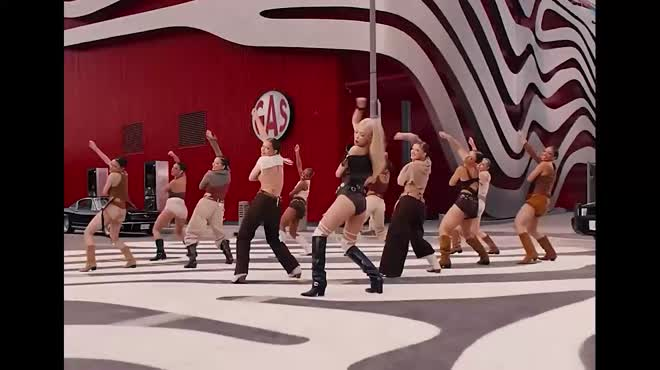

MV mới Jennie (BlackPink) bị chê tình dục hóa
MV “Mantra” của Jennie nhận về hơn 6,76 triệu lượt xem chỉ sau 9 tiếng ra mắt, với vô số lời
khen từ người hâm mộ. Tuy nhiên, một bộ phận khán giả cho rằng đó là tác phẩm đáng quên, bị tình dục
hóa.
Như thông báo trước đó, Mantra được phát hành công khai vào sáng 11/10 (theo giờ Hàn Quốc). Đây là sản
phẩm âm nhạc solo đầu tiên của Jennie sau khi kết thúc hợp đồng cá nhân với YG Entertainment và thành
lập công ty riêng.
MV mới của Jennie có thời lượng khá ngắn theo nhận xét từ người nghe. Nữ thần tượng sinh năm 1996 vừa
rap vừa hát và ca từ hoàn toàn bằng tiếng Anh.
Mantra có nhịp điệu nhanh, mạnh mẽ và lặp đi lặp lại, với nội dung kể về những cô gái xinh đẹp, thích
tiệc tùng ở Los Angeles.

Trích đoạn Jennie thực hiện vũ đạo gợi cảm trong Mantra.
Trong MV, Jennie xuất hiện với những trang phục gợi cảm, từ xuyên thấu đến thiếu vải. Người đẹp
Hàn Quốc đặc biệt yêu thích xu hướng thời trang quần siêu ngắn từng khiến cô trở thành tâm điểm tranh
cãi tại Tuần lễ Thời trang Paris 2024 vào đầu tháng 10.
Những động tác vũ đạo sử dụng trong Mantra cũng theo hướng quyến rũ, với nhiều động tác lắc hông, uốn éo
cơ thể.
Mantra nhanh chóng gây sốt mạng xã hội quốc tế. Chỉ sau 9 giờ đăng tải, MV nhận được hơn 6,75 triệu lượt
xem và vào top 5 thịnh hành trên YouTube. Với tiến độ hiện tại, con số này dự kiến còn tăng nhiều
nữa.
“Mantra Out Now” (tạm dịch: Mantra ra mắt bây giờ) và “Pretty Girl Jennie” nằm trong top 5 xu hướng được
quan tâm nhất trên X.
Đông đảo cư dân mạng dành lời khen cho ca khúc mới của Jennie. Họ đánh giá bài hát có giai điệu gây
nghiện và sẽ nhanh chóng thành hit. Bên cạnh đó, không ít người mê mẩn vẻ ngoài nóng bỏng của
Jennie.
Khán giả bình luận: “Nó tốt hơn nhiều so với tôi nghĩ”, “Cô ấy trông thật xinh đẹp”, “Lúc đầu tôi ngạc
nhiên vì nó ngắn như vậy. Giờ thì tôi nghiện bài hát này và cứ nghe đi nghe lại”, “Việc bài hát này đạt
vị trí thứ 41 trên bảng xếp hạng Melon khi được phát hành vào 9h sáng nay và được hát bằng tiếng Anh là
huyền thoại”, “Phong cách của cô ấy thật ngầu. Toàn bộ ca khúc thật vui nhộn”, “Việc nhìn thấy Jennie
khoe phong cách và cá tính của riêng mình thực sự rất hấp dẫn”, “Việc chờ đợi là đáng giá. Màn tái xuất
lần này thay cho tuyên bố Jennie không hề thiếu chuyên nghiệp”…
Tất cả trang phục được Jennie mặc trong MV mới đều theo phong cách sexy, khoe da thịt. Ảnh: X.
Tuy nhiên, không phải ai cũng có đánh giá tích cực về MV. Một bộ phận khán giả chê bài hát đáng thất vọng
và hình ảnh trong MV bị tình dục hóa.
Cư dân mạng nêu ý kiến: “Bài hát đó thực sự đáng quên. Thật đáng tiếc cho Jennie, cô ấy có tài năng
nhưng bài hát này dường như không thể hiện được điều đó. Quá cơ bản”, “Tôi đã mong chờ bản phát hành này
nhưng tôi rất thất vọng. Đoạn điệp khúc trước là phần hay duy nhất của bài hát”, “Hay hơn bài hát của
Lisa, nhưng vẫn tệ. Ngoài ra, MV chứa quá nhiều nội dung tình dục hóa không cần thiết”, “Cô ấy luôn tận
dụng cơ thể mình cho mọi thứ, nên không có gì ngạc nhiên khi MV của cô ấy đầy rẫy hình ảnh đó. Sự nổi
tiếng của cô ấy chủ yếu là vì cô ấy xinh đẹp”, “Khá dễ quên và không hấp dẫn lắm”, “Các cô gái BlackPink
phát hành những bài hát nhàm chán, cùng chủ đề, cùng lời bài hát, cùng ý nghĩa như ‘hãy nhìn em này, em
giàu có và xinh đẹp’. Hoàn toàn không có sự sáng tạo nào trong đó”, “Tôi đoán, con gái đẹp đồng nghĩa
với việc khoe da thịt càng nhiều càng tốt”…
Jennie và công ty quản lý không phản hồi về tranh cãi, thay vào đó tập trung vào lịch trình bận rộn.
Theo AllKpop, Jennie có kế hoạch góp mặt trong Jimmy Kimmel Live! vào ngày 15/10. Cô dự kiến biểu diễn
Mantra trên sân khấu của chương trình trò chuyện đêm khuya hàng đầu nước Mỹ.